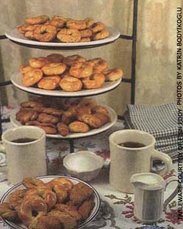
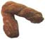
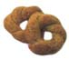
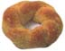
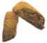

Baking for the holidays
A more common treat were dough boys - fried bread sometimes sprinkled with sugar-made from the remains of our twice-weekly bread-baking sessions.
It was from all of this that I learned how to mix, knead and roll dough for homemade pasta and pies. There were no cookbooks, no recipes, no measuring cups or spoons. From my mother I learned the basics of baking and cooking, minus the modern conveniences. Later, as I got older, my mother teamed from me about recipes and measuring cups and spoons and different ingredients and all of the modern cookbook how-to's. She adapted to this new way quickly and did well, though she could not read.
We spent many a day, first in her kitchen and later in mine, trying new recipes or perfecting old ones. Among our favorites were those for traditional Italian biscuits - egg, pepper and wine.
5cups flour
5 teaspoons baking powder
1 cup sugar
1 cup red table wine (I use burgundy)
1cup corn oil
2 beaten eggs
Mix the flour, baking powder and sugar in a bowl and form a well at the center. In another bowl, mix wine, oil and eggs and pour into dry-ingredients well. Mix and knead, adding more flour if necessary for handling. Shape into braided sticks, about 4" long. (To make braided sticks, roll a piece of dough out to about 8" in length and a 1/4" around. Fold dough length in half, pinch the ends together and twist for braided effect.)
Place biscuits on greased cookie sheets, brush tops with a beaten egg and bake at 350°F for 20 to 25 minutes. Makes about six dozen.
4 cups all-purpose flour
1 tablespoon baking powder
1 tablespoon coarse ground black pepper
1 teaspoon fennel seed (optional)
Mix above ingredients and form a well.
In another bowl, mix:
1 egg beaten
3/4 cup corn oil
1/2 cup milk Pour into dry-ingredients well. Add 1/2 cup of hot water, mix and knead thorough ly. Roll clumps of dough into 8" lengths, twist and form into round biscuits (like wreaths). Place on greased cookie sheets, brush with beaten egg and bake at 375°F for 20 to 25 minutes. Makes three dozen.
In another bowl, mix:
3 1/2 to 4 cups flour
4 teaspoons baking powder
Add flour/baking powder mixture to liquid ingredients, knead until smooth, adding flour for easy handling. Shape into round wreaths (as for pepper biscuits), place on greased cookie sheet, brush tops with beaten egg and bake at 400°F for 15 minutes. Yields three to four dozen.
In mixing bowl , combine:
3 eggs, beaten
1/2 cup corn oil
1/2 cup sugar
1/2 cup milk
1 teaspoon vanilla
In another bowl, mix:
2 cups flour
1 1/2 teaspoons bakingpowder
Add the flour mixture to the liquid ingredients, knead and shape into 3" x 9" loaves. Place on greased cookie sheet, sprinkle with sugar and cinnamon. Bake at 350°F for 20 minutes. Cool, then cut into approximately 3/4" slices, return to cookie sheet and brown on each side. Cool five to ten minutes, then stack in tins until ready to serve.
In mixing bowl, combine:
2 eggs, beaten
1/2 cup sugar
1/2 cup corn oil
1/2 teaspoon anise flavoring
Sugarless ItalianBiscuits
4 cups flour
4 teaspoons baking powder
1 teaspoon fennel seed
Mix above ingredients and form a well. In another bowl, combine:
3 eggs, beaten (save about half an eggto brush tops of biscuits)
1/2cup corn oil
1/2 cup milk
1/2 cup water
Add liquid ingredients to flour mixture. Knead until smooth. Shape into round rings (like doughnuts), brush tops with reserved egg and bake on greased cookie sheets at 375°F for 25 minutes. Yields about four dozen.
Anita Fagiano
Providence, Rhode island
|
Wine Biscuits |
Italian Pepper Biscuits |
 Egg Biscuits |
|
 Toasted Egg Slices |
 |
 |
|
 |
|
|